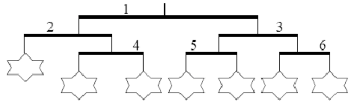
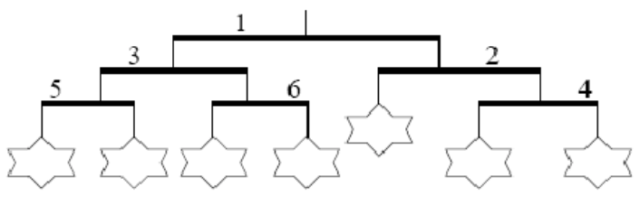
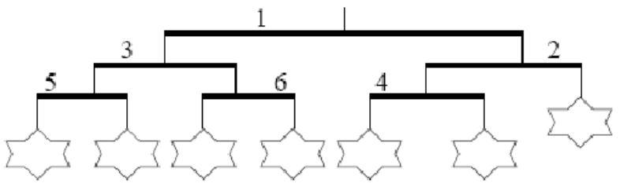

你准备给弟弟 Ike 买一件礼物，但是，Ike 挑选礼物的方式很特别：他只喜欢那些能被他排成有序形状的东西。
你准备给 Ike 买一个风铃。风铃是一种多层的装饰品，一般挂在天花板上。每个风铃都包含一些由竖直线连起来的水平杆。每根杆的两头都有线连接，下面或者挂着另一根水平杆，或者挂着一个玩具。下面是一个风铃的例子：

为了满足弟弟，你需要选一个满足下面两个条件的风铃：
- 所有的玩具都在同一层（也就是说，每个玩具到天花板之间的杆的个数是一样的）或至多相差一层。
- 对于两个相差一层的玩具，左边的玩具比右边的玩具要更靠下一点。
风铃可以按照下面的规则重新排列：任选一根杆，将杆两头的线“交换”。也就是解开一根杆左右两头的线，然后将它们绑到杆的另一端。注意这个操作不会改变更下面的杆上线的排列顺序。
由于你正在参加信息学奥林匹克的训练，所以你决定设计一个算法，判断能否通过重新排列，将一个给定的风铃变为 Ike 喜欢的样子。
考虑上面的例子，上图中的风铃满足条件 1，却不满足条件 2 ——最左边的那个玩具比它右边的要高。
但是，我们可以通过下面的步骤把这个风铃变成一个 Ike 喜欢的形式：
- 第一步，将杆 1 的左右两边交换，这使得杆 2 和杆 3 的位置互换，交换的结果如下图所示：
 - 第二步，也是最后一步，将杆 2 的左右两边交换，这使得杆 4 到了左边，原来在左边的玩具到了右边，交换的结果发下图所示：

现在的这个风铃就满足 Ike 的条件了。
你的任务是：给定一个风铃的描述，求出最少需要多少次交换才能使这风铃满足 Ike 的条件（如果可能的话）。
 Comet OJ
Comet OJ